Part 3 – Time Series Trends & Insights
廣告活動成效與趨勢分析
接著先前的資料總覽和資料參照，用同樣的方式以 campaign_name 和 c_date 為目標整理資料。
函式
- text
- weekday
Chart設定
記得固定好欄位，拖拉的時候才不會歪掉。
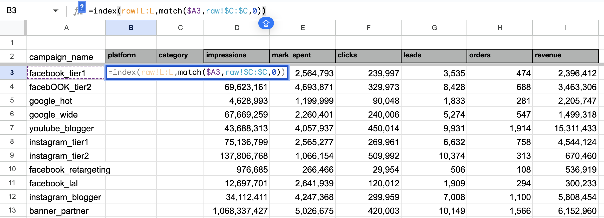整理 daily 資料的時候可以多加一個 Day of Week (DOW)，顯示週一、週二、週三等，比較週間和週末成效是否有差異。
首先用 weekday 拿到每個日期代表的數字1到7，預設每週從週日(1)開始，週六(7)結束。可調整第二個引數改變預設值，例如若改成2，回傳值1-7表示週一至週日。
WEEKDAY 函式文件在處理文字格式的時候 text 函式很好用，text 需要兩個引數，第一個是目標值，第二個是格式。日期格式常用的有 "dddd" 和 "ddd"，分別是 weekday 全名 (Monday, Tuesday...) 和簡稱 (Mon, Tue...)
TEXT 函式文件把從weekday拿到的數字傳給text函式，就能得到Mon、Tue等代表DOW的文字。
由結果看來，週五與週六訂單最多，週間和週末成效沒有明顯差異。
 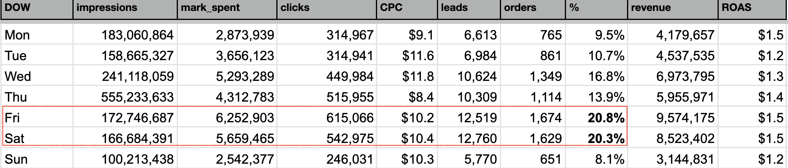
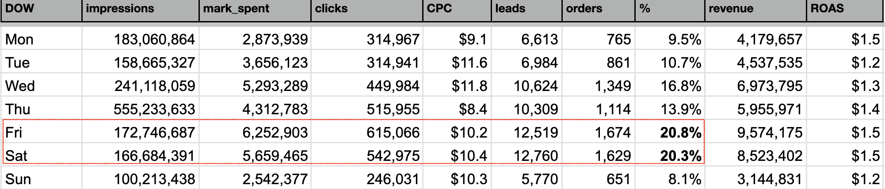
接下來用 Combo Chart 做直條 + 折線圖。
第一組：clicks (bar) + CPC (line)。
- Insert → Chart，Chart Type 選 Combo Chart。
- Data range 加入 c_date、clicks、CPC。
- X-axis：c_date，Series：clicks、CPC。
- Customize → Series，把 CPC 設定為 right-axis。
 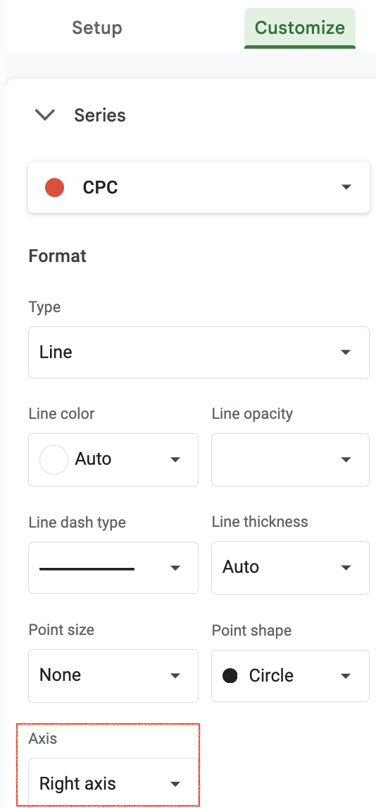
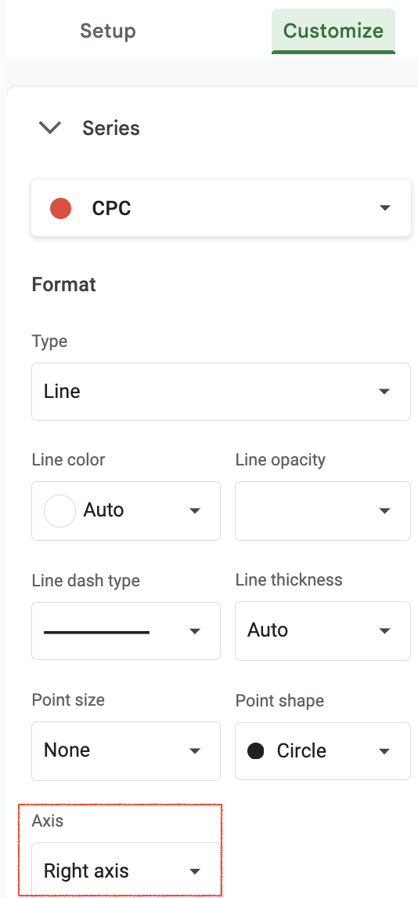
觀察：花費與 clicks 集中在 2/10 ~ 2/20，查了一下這段時間是當年的農曆新年 (2021/2/12~2/16)。2/18 impressions 爆量但當天行銷沒有特別增加，有可能計價是基於 orders 而非 impressions。
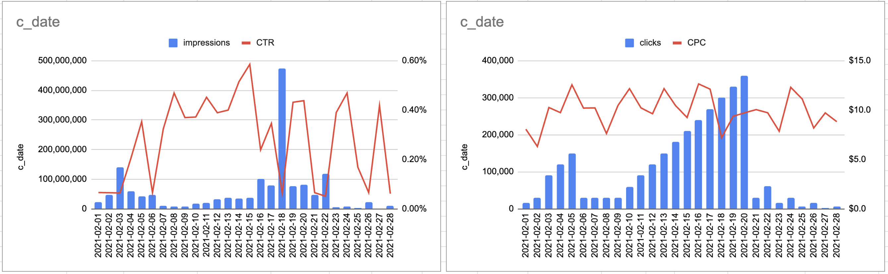
用樞紐分析表查 2/18 impressions 來源為 banner_partner。
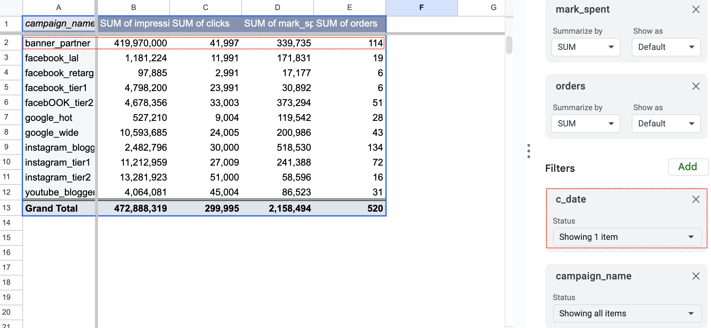其他指標未隨曝光量同日上升，訂單量高峰發生在impressions高峰後約 2 天。
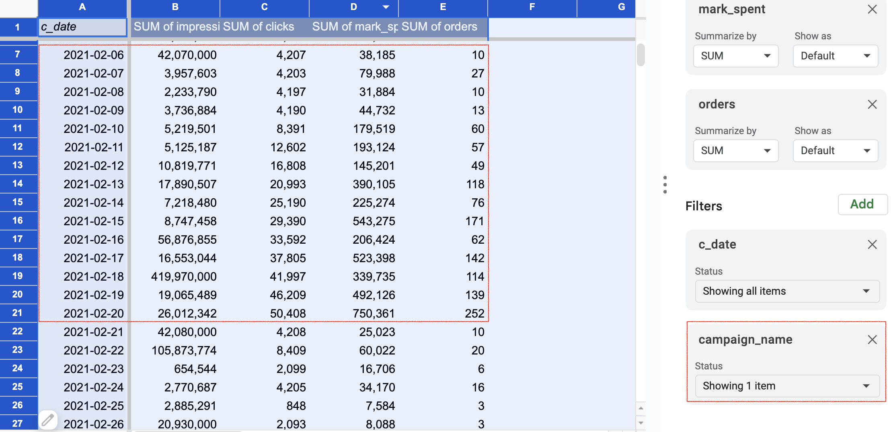函式產生欄位 - 排序
函式生成的欄位無法用篩選器排序，影響分類查看成效。兩種解法：
- Named Ranges
- Filter
Named Ranges
先選取目標資料範圍，並命名為 campaign_performance，
使用 sort 函式將campaign_performance列為資料來源，設定要排序的欄位代號
=sort(campaign_performance,3,FALSE,2,TRUE,6,FALSE)SORT 函式文件 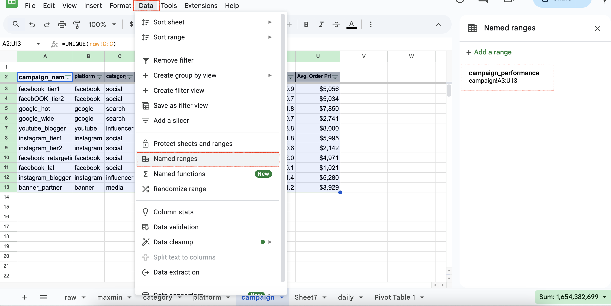

觀察：
- leads 與訂單集中於 influencer 和 social
- 最高客單價：influencer
- 最多曝光：media
- 有機會可加碼預算：instagram_blogger、youtube_blogger
- 需優化：facebook_lal（ROAS 僅 $0.1）
Google search 中 google_hot、google_wide 的 CPA 差不多但客單價落差大，由名稱猜測可能和文案位置或文案內容有闗，需要深入檢視。
Filter
兩種方式：
1. Filter view
建立 filter view 後，在要排序的欄位設定排序方式。
 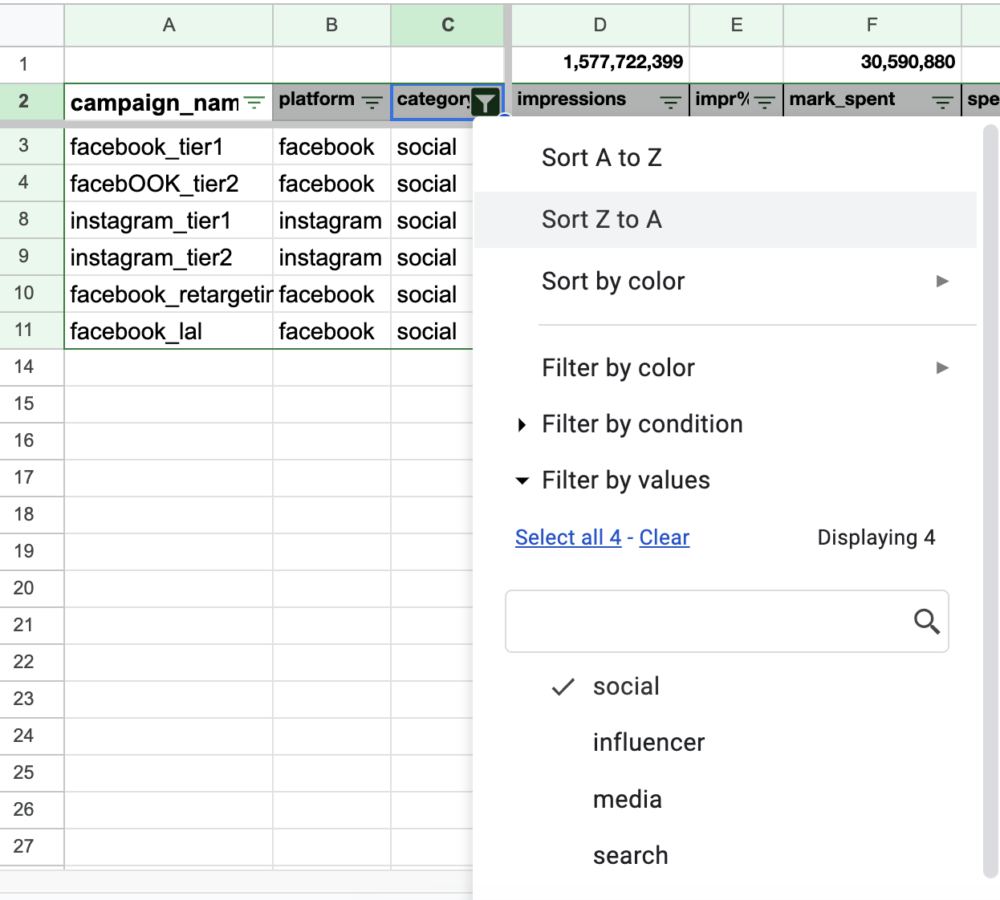
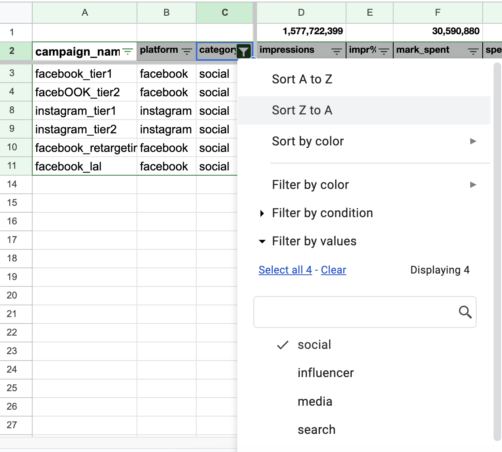
2. Filter 函式
召換filter函式，選定資料範圍A3:U13，並設定篩選條件。
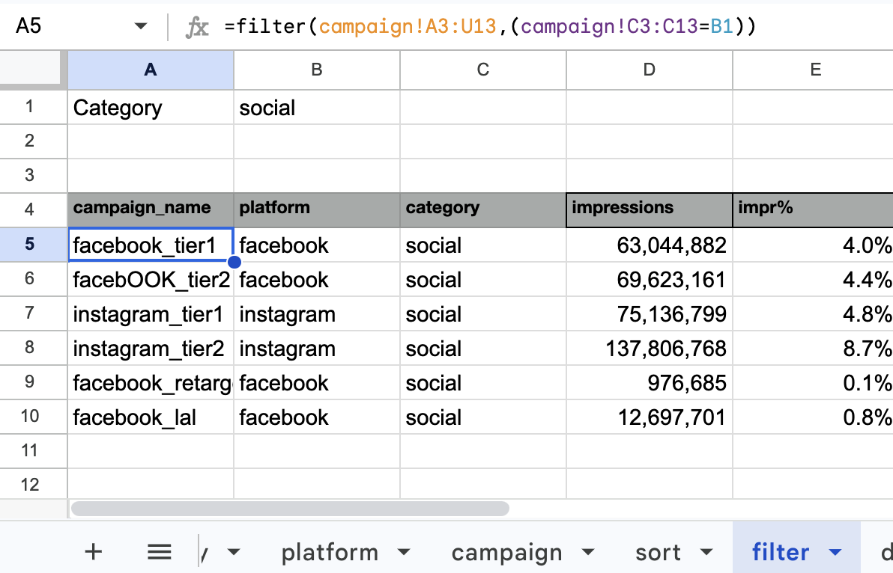 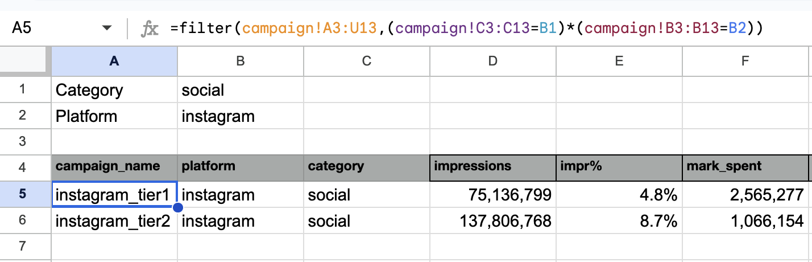 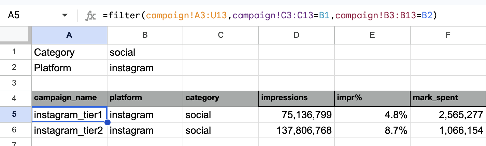更多filter函式參考資源和教學：
總結
這個系列用到的功能和函式分類：
- 圖表與樞紐分析表
- 文字處理：left, mid, right, lower, find, unique, text
- 數字/日期：max, min, weekday
- 條件計算：sum, sumif, count, countif
- 參照比對：vlookup, indirect, index + match
依照這些函式進行資料分類、篩選與依條件整理，最後進行成效分析，是做描述型資料分析很方便的工具包，同樣的步驟也可以應用在其他資料集。